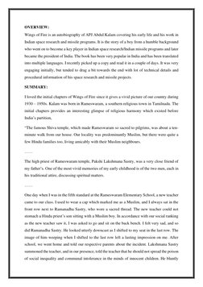

Library › Psychology & People
Wings of Fire — Summary & Key Lessons

The autobiography of India's Missile Man and People's President — from selling newspapers to launching rockets.
📖 OPEN THE FULL INTERACTIVE BREAKDOWN →🌐 Read it in Hindi, Hinglish, Gujarati, Tamil & 22 more languages — free, with audio.
💡 The Big Idea
Kalam's autobiography traces an impossible arc: born to a modest boat-owning family in Rameswaram, selling newspapers as a boy — to leading India's satellite launch (SLV-3) and missile programs (Agni, Prithvi), and later the presidency. The chapters are organized as a life's four movements: Orientation (childhood — secular harmony, hard work, teachers who saw further than circumstances), Creation (learning leadership at ISRO under Vikram Sarabhai — including the legendary failure of SLV-3's first flight), Propitiation (the missile years — building teams that outperformed sanctions and skeptics), and Contemplation (the philosophy: dreams must precede achievement; failures are teachers; leadership means absorbing blame and broadcasting credit). It's India's most-gifted graduation present for a reason: the blueprint is replicable — dream, learn, persist, give credit, serve.
🧠 The 4 Key Lessons
Lesson 1: Rameswaram: The Foundation of Character
Part 1: Orientation
Kalam's childhood chapters are a masterclass in what actually transfers from origins: not money (there was little) but MODELS — his father Jainulabdeen's austere integrity and practical wisdom ('When troubles come, try to understand the relevance of your sufferings; adversity always presents opportunities for introspection'), the town's lived secularism (the mosque, temple, and church in working harmony; his closest childhood friends and mentors Hindu priests' sons and his science teacher), and the dignity of early work: collecting newspapers tossed from the Rameswaram-bound train during the war years — his first salary, and first lesson that effort converts directly into agency. The teachers thread runs deepest: Iyadurai Solomon's reframe — 'to succeed, you must first DESIRE intensely' — and the science teacher who broke caste protocol to host the Muslim boy at his table: character, Kalam insists, is largely borrowed early, from whoever stands close enough to lend it.
📖 Example: The book's most-taught scene: teacher Sivasubramania Iyer serving young Kalam dinner in his own kitchen against his wife's orthodox objections — then inviting him again the next week, by which time the wife herself served the meal. 'He conveyed to me,' Kalam… Read the full example →
⚡ Do this: Audit your borrowed character: list the three people whose standards you unconsciously inherited — and one standard you need to borrow NOW from someone within reach. Then do the Solomon exercise: write your desire with intensity and specificity; vague wanting builds nothing.
Lesson 2: Sarabhai's School: How Great Mentors Build People
Part 2: Creation
Kalam's ISRO years under Dr. Vikram Sarabhai form the book's leadership curriculum — taught by demonstration. Sarabhai's methods, as Kalam records them: he assigned responsibilities BEYOND apparent readiness (handing the young engineer major systems on trust — 'he was not looking at what I was; he was looking at what I could become'), tolerated intelligent failure while demanding total effort, connected every technical task to the national purpose (rockets from a fishing village church at Thumba — the sacred and the scientific sharing a roof), and made himself accessible across hierarchy. Kalam's own synthesis as he rose: leadership is the transfer of belief — the leader's real output is the confidence of the team; deadlines are commitments to the mission, not the boss. The chapter's quiet radicalism: India's space program was built not on resources (there were none — rocket parts arrived by bicycle and bullock cart) but on borrowed conviction, systematically distributed.
📖 Example: The iconic photographs Kalam narrates: a rocket nose-cone transported on a bicycle carrier, a satellite trundling by bullock cart — the world's cheapest space program assembling first-world results from third-world budgets, because Sarabhai had convinced a… Read the full example →
⚡ Do this: Apply the Sarabhai transfer: assign someone under you (junior, sibling, mentee) a responsibility one size beyond their evidence — with visible confidence and available support. And find your own Sarabhai: the one leader whose belief you can borrow while yours is under construction.
Lesson 3: SLV-3: The Failure That Taught a Nation
Part 2–3: The Launches
The book's dramatic center: August 10, 1979 — SLV-3's first flight, Kalam as mission director, and a control-system failure sending India's rocket into the Bay of Bengal instead of orbit. The leadership sequence that followed became Indian management legend: chairman Satish Dhawan took the press conference HIMSELF, absorbing the national humiliation — 'Friends, today we had our first satellite launch attempt; we failed. But I have full confidence in my team; next year we will succeed.' The next year, SLV-3 flew perfectly — and Dhawan sent KALAM to face the cameras and collect the glory. The lesson Kalam extracted and taught forever: 'the leader absorbs failure and distributes success' — and its twin: failures are data (the post-mortem culture that treated the crash as curriculum, not crime, is what made the success possible). Kalam's personal addendum: he'd wanted to quit that night; the difference between a failed director and the Missile Man was one leader's response and one more attempt.
📖 Example: The two press conferences, one year apart, are the entire theory of leadership in a single contrast: 1979 — Dhawan alone before hostile cameras, owning everything; 1980 — Dhawan pushing Kalam forward into the flashbulbs for a success the chairman had every… Read the full example →
⚡ Do this: Institutionalize the Dhawan protocol wherever you lead: next failure, YOU face the stakeholders; next success, your team member presents it. And run the blameless post-mortem on your own last flop: data extracted, lesson filed, next attempt scheduled — the sequence, not the stumble, is the story.
Lesson 4: Wings for Others: Dreams, Discipline & the Teacher's Heart
Part 4: Contemplation
The closing movement distills the philosophy that later made Kalam the 'People's President.' On DREAMS: 'Dream, dream, dream — dreams transform into thoughts, and thoughts result in action' — but Kalamian dreaming is engineering: the dream must be written, decomposed into acquirable knowledge (his formula: dream → knowledge → hard work → perseverance), and defended against the small-thinking of others ('small aim is a crime'). On SELF-BELIEF under fire: 'failure will never overtake me if my definition to succeed is strong enough.' On SIMPLICITY: the man who commanded missile budgets owned almost nothing, gave his salary away, and measured wealth in students taught — the book everywhere insists that greatness and simplicity are natural partners, not opposites. And the destination of it all: IGNITION — Kalam's conviction that his real mission was lighting other minds ('the teacher's heart'), which is why the autobiography reads less like a memoir and more like a torch being handed, deliberately, to whoever picks it up.
📖 Example: The post-presidential Kalam completes the arc: history's only head of state who returned to teaching the Monday after leaving office — and who died, at 83, doing exactly that: mid-lecture at IIM Shillong, delivering a talk titled 'Creating a Livable Planet… Read the full example →
⚡ Do this: Write your dream the Kalam way: the dream itself, the knowledge it requires (listed), the work schedule that acquires it, and the perseverance clause (what you'll do after setback #1). Then hand one torch this month: teach someone younger something you know — the mission, he'd insist, was always this.
✅ 5-Step Action Plan
- List your borrowed standards; borrow the one you're missing now.
- Assign someone a Sarabhai-sized responsibility with visible belief.
- Adopt the Dhawan protocol: absorb failures, distribute successes.
- Engineer your dream: knowledge list, work schedule, perseverance clause.
- Teach someone younger, this month — hand the torch.
💬 Best Quotes from Wings of Fire
- “Dream, dream, dream. Dreams transform into thoughts and thoughts result in action.”
- “If you want to shine like a sun, first burn like a sun.”
- “Failure will never overtake me if my definition to succeed is strong enough.”
Interactive version: mark lessons as read, listen in your language, share quote cards.